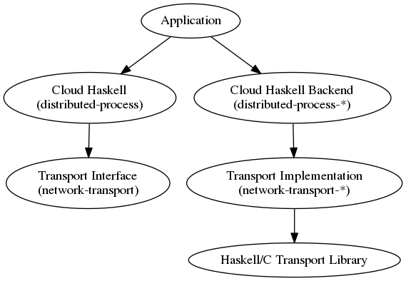

Overview¶
This is the Cloud Haskell Platform. Cloud Haskell is a set of libraries that bring Erlang-style concurrency and distribution to Haskell programs. This project is an implementation of that distributed computing interface, where processes communicate with one another through explicit message passing rather than shared memory.
Originally described by the joint [Towards Haskell in the Cloud][haskell11-ch] paper, Cloud Haskell has been re-written from the ground up and supports a rich and growing number of features for
- building concurrent applications using asynchronous message passing
- building distributed computing applications
- building fault tolerant systems
- running Cloud Haskell nodes on various network transports
- working with several network transport implementations (and more in the pipeline)
- supporting static values (required for remote communication)
There is a [presentation][fun201202-coutts] on Cloud Haskell and this reimplementation, which is worth reading in conjunction with the documentation and wiki pages on this website..
In this book we are covering many concepts related to cloud haskell. Book is split into tree parts:
- Tutorial
- Tutorial that covers all basic concepts of the distributed-process package, that is the core of the Cloud Haskell. After reading this manual one can build her own distributed systems using Cloud Haskell and build her own components
- Architecture
- In depth description of the components and architecture decisions lead to those. This part is not required in order to write your own applications, but still may be useful for understanding how and why things work. This may be helpful in building your own big systems.
- Cookbook
- A number of receipts and short tutorials describing how to implement certain snippets. Description of the Distributed process platform packages can be found here.
Cloud Haskell comprises the following components, some of which are complete, others experimental.
distributed-process- Base concurrency and distribution support
distributed-process-platform- meta package for The Cloud Haskell Platform - APIs
distributed-static- Support for static values
rank1dynamic- Like Data.Dynamic and Data.Typeable but supporting polymorphic values
network-transport- Generic Network.Transport API
network-transport-tcp- TCP realisation of Network.Transport
network-transport-inmemory- In-memory realisation of Network.Transport (incomplete)
network-transport-composed- Compose two transports (very preliminary)
distributed-process-simplelocalnet- Simple backend for local networks
distributed-process-azure- Azure backend for Cloud Haskell (proof of concept)
One of Cloud Haskell’s goals is to separate the transport layer from the process layer, so that the transport backend is entirely independent. In fact other projects can and do reuse the transport layer, even if they don’t use or have their own process layer (see e.g. [HdpH][hdph]).
Abstracting over the transport layer allows different protocols for message passing, including TCP/IP, UDP, MPI, CCI, ZeroMQ, SSH, MVars, Unix pipes, and more. Each of these transports provides its own implementation of the Network.Transport API and provide a means of creating new connections for use within Control.Distributed.Process.
The following diagram shows dependencies between the various subsystems, in an application using Cloud Haskell, where arrows represent explicit directional dependencies.

In this diagram, the various nodes roughly correspond to specific modules:
| Cloud Haskell | Control.Distributed.Process |
| Cloud Haskell | Control.Distributed.Process.* |
| Transport Interface | Network.Transport |
| Transport Implementation | Network.Transport.* |
An application is built using the primitives provided by the Cloud
Haskell layer, provided by the Control.Distributed.Process module, which
defines abstractions such as nodes and processes.
The application also depends on a Cloud Haskell Backend, which provides functions to allow the initialisation of the transport layer using whatever topology might be appropriate to the application.
It is, of course, possible to create new Cloud Haskell nodes by
using a Network Transport Backend such as Network.Transport.TCP
directly.
The Cloud Haskell interface and backend make use of the Transport
interface provided by the Network.Transport module.
This also serves as an interface for the Network.Transport.*
module, which provides a specific implementation for this transport,
and may, for example, be based on some external library written in
Haskell or C.